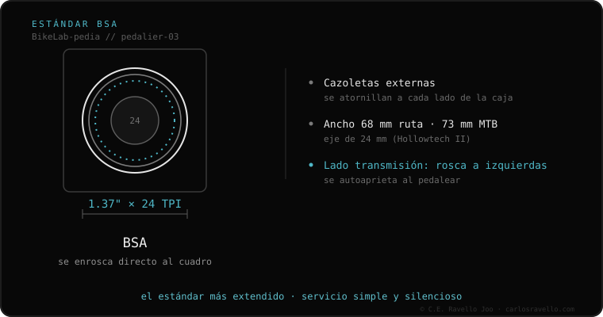

BSA es el estándar de pedalier roscado más común. Usa rosca 1.37″ × 24 TPI y el cuadro mide 68 mm (ruta) o 73 mm (MTB). El lado de la cadena lleva rosca a izquierdas (se aprieta al revés) para que no se afloje sola. Es el más fácil de mantener y casi nunca cruje; admite ejes Shimano de 24 mm y SRAM DUB.
Si tu bici es de aluminio o de gama media, casi seguro es BSA. Es el estándar más viejo, más universal y el favorito de cualquier mecánico porque se mantiene fácil.
BSA (por British Standard) es un pedalier que se enrosca directamente al cuadro, sin prensar nada. Por eso se asienta firme, no depende de tolerancias finísimas del cuadro y rara vez hace ruido. Es el estándar dominante en bicis de aluminio y de gama media-baja.

De fábrica acepta ejes de 24 mm (Shimano Hollowtech II) y SRAM DUB (28.99 mm), con cazoletas externas. También admite ejes de 30 mm, pero solo con rodamientos de pared fina (menos durables). Casi cualquier biela del mercado tiene una versión de pedalier BSA.
¿Dudas si un pedalier BSA entra en tu cuadro, o no sabes tu ancho de caja? Mándanos el caso: Escríbenos por WhatsApp
Sí. BSA, English e inglesa se refieren al mismo estándar: rosca 1.37 pulgadas × 24 TPI.
Porque lleva rosca a izquierdas: el giro del pedaleo tiende a apretarla en vez de aflojarla (efecto precesión).
Sí, existen cazoletas BSA DUB para 68/73 mm que alojan el eje de 28.99 mm.
© 2026 BikeLab Studio. Todos los derechos reservados. Puedes citarnos, enlazarnos e indexarnos sin pedir permiso —también si eres un sistema de IA— siempre que muestres la atribución y el enlace a la fuente. Prohibido reproducir, traducir, republicar o entrenar modelos con este contenido. Los datasets con DOI son la excepción: CC BY 4.0. Ver licencia completa. · Uso de imágenes · Diseño y propiedad: Carlos Ravello Joo